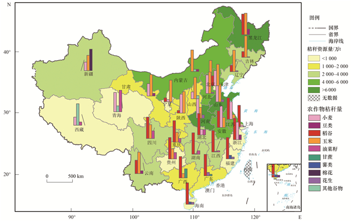

中国的机会与困境
巨大的资源潜力
中国作为农业大国，每年产生大量农作物秸秆等木质纤维素废弃物。这些资源若能有效转化为燃料乙醇， 将在能源安全、环境保护和乡村振兴三个维度上产生深远影响。
8亿吨
年秸秆产量
理论资源量
理论资源量
数千万吨
纤维素乙醇
可替代汽油量
可替代汽油量
2026.2
国家重点研发计划
启动时间
启动时间

中国各省份秸秆资源分布（按资源总量分级，柱状图表示不同作物秸秆产量）
严峻的产业挑战
尽管资源禀赋优越，中国纤维素乙醇产业化面临的问题同样突出， 涵盖了从原料到市场的全链条瓶颈：
- 原料收集困难：秸秆堆积密度极低（50-120 kg/m³），收集半径超过50公里后 运输成本急剧上升，原料供应的季节性和分散性使规模化供应难以保障
- 酶制剂依赖进口：核心纤维素酶技术被Novozymes、DuPont等少数外企垄断， 国内酶制剂在比活力和稳定性方面存在明显差距
- 投资强度巨大：一座年产5万吨纤维素乙醇工厂投资约3亿美元， 投资回收期长、风险高，资本市场态度审慎
- 政策支持不足：相较于美国RFS2强制掺混政策和巴西ProAlcool计划， 中国缺乏同等力度的纤维素乙醇专项补贴和强制市场政策
政策曙光
2026年2月，国家重点研发计划"纤维素乙醇关键技术与示范"专项正式启动， 标志着国家对纤维素乙醇产业化重视程度的提升。该专项聚焦预处理、酶解、发酵等核心环节的 技术突破，并强调计算机辅助的智能化工艺优化。然而，从政策启动到产业化落地 之间仍有漫长的道路。